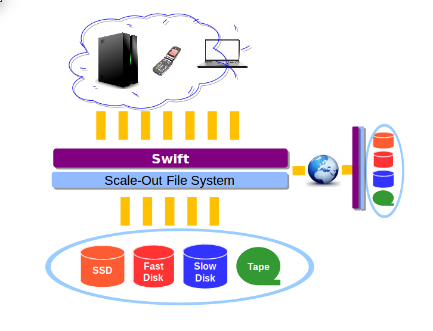

Deploying Swift on a Scale-out File System
Dean Hildebrand
IBM Almaden Research Center
William Owen
IBM Elastic Storage Development
Thiago da Silva
Red Hat
Overview of Swift on a Scale-out File System
Swiftonfile as a Storage Policy

Use Case:
Multiple protocol access